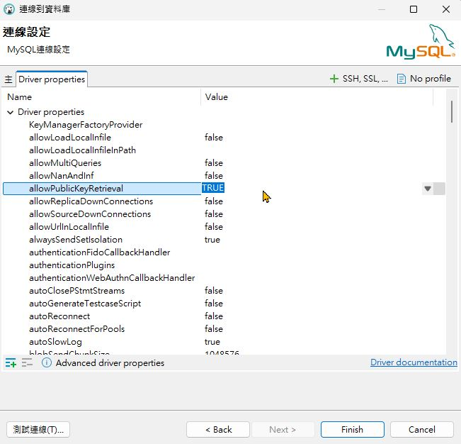

專案
comments powered by Disqus
建立資料庫和資料表
連線資料庫
點擊插頭 icon > 選擇 MySQL > Next


輸入 Database、password > 測試連線 > Download >


連線錯誤

回到連線設定 > Driver Properties > allowPublicKeyRetrieval 改為 true

再次測試連線，連線成功 > OK > Finish


新增資料庫
右鍵資料庫 > Create New 資料庫

輸入 Database name > OK

新資料庫就出現囉!

新增資料表
資料庫 > SQL編輯器 > 開啟SQL腳本

新增 users(使用者) 資料表
CREATE TABLE users (
user_id BIGINT PRIMARY KEY COMMENT '使用者 ID',
name VARCHAR(100) COMMENT '姓名',
age INT COMMENT '年齡',
gender CHAR(1) COMMENT '性別（M/F）',
income DECIMAL(15, 2) COMMENT '年收入',
job VARCHAR(100) COMMENT '職業',
marital_status VARCHAR(50) COMMENT '婚姻狀態',
education VARCHAR(100) COMMENT '教育程度',
location VARCHAR(100) COMMENT '居住地區',
created_at DATETIME DEFAULT CURRENT_TIMESTAMP COMMENT '註冊時間'
);
重新 refresh，就可以看到剛剛新增的資料表